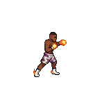

Branch · animation review
Jab now uses the original three drawn poses, unchanged, in order 2 → 1 → 0 → 1 → 2: retraction → extension → retraction. No new artwork was generated. It is not approved for gameplay. Fire is rolled back to the original six drawn frames: the head-edit attempt is no longer used here. The original head protrusion is still unresolved. Heavy remains unchanged. Live gameplay is unchanged.
Jab

Original drawn poses · source order 2 → 1 → 0 → 1 → 2. The existing poses limit the windup; no cutout arm is used.
Fire

Proposed impact → idle → return
This isolated timing demo is not game combat. Attack playback stops at its selected contact frame; a demo damage number appears once, then guard idle plays throughout the return.
The timing demo is paused by default; the Jab artwork has not passed review. This review page is separate from the live game, which still uses the approved static pose.
Contact frames (zero-based): Jab 2 (original source pose 0) · Heavy 5 · Fire 4. Fire uses the release frame as a provisional impact cue; actual game damage must synchronize with the projectile hit.
Back to unchanged live game